Next: A Brief Overview of Up: Tamara Smyth Previous: Practical Considerations for Vibratory
The drawbacks to using mechanically coupled sensors most frequently involve the acoustic impedance load concomitant with their operation. All sensors have inertia, and this will always result in a normal stress being added to the system, in the location of the sensor. Recall that the characteristic impedance of a material is given by the stress over the particle velocity in the medium, or . If the impedance of the sensor is high enough, the dynamic behavior of the object changes. This can be somewhat ameliorated by ensuring the sensors are extremely lightweight, or perhaps by the clever use of suspension springs. [7, p. 4] Recall from section 1.4 that at an interface between two impedances  and
and  , if
, if  is much higher than
is much higher than  , the reflected wave will not be completely inverted at the interface, and a partial standing-wave will result. The least adversely affected frequencies are those for which the sensor has a resonance. Since the sensor's inertial and
restorative forces are
, the reflected wave will not be completely inverted at the interface, and a partial standing-wave will result. The least adversely affected frequencies are those for which the sensor has a resonance. Since the sensor's inertial and
restorative forces are  apart in phase at such frequencies, the impedance will tend toward zero. However, the severely limited bandwidth of such a measuring device would not make for a particularly good sensor. [7, p. 9]
apart in phase at such frequencies, the impedance will tend toward zero. However, the severely limited bandwidth of such a measuring device would not make for a particularly good sensor. [7, p. 9]
The carbon microphone is an element which changes its resistance in response to strain. The principle of operation is simple: carbon particles are suspended in a insulating substrate, which are pressed together when the material exhibits strain. A voltage across the element encodes the strain into changes in current. This type of instrument is very light-weight, cheap, and can be made into force sensing resistors (FSR's) and strain gauges. However, carbon microphones do not have reasonable signal to noise ratios or bandwidths for high-quality vibration sensing. Furthermore, they are fairly easily damaged. Their generality is also questionable, since they must be glued onto the object of study. They do, however, work fairly well for measuring low frequencies. [7, p .26]
Variable inductance sensors typically measure displacement. They are usually implemented with an alternating voltage, and the displacement is encoded into the current. This approach allows the engineer to filter out interference sidebands easily. However, the carrier frequency must high enough that the entire bandwidth of interest can pass through without artifacts. Typically the usable bandwidth is from DC to about one quarter the carrier frequency. This technique encodes the signal onto the amplitude of the carrier wave. An alternative to the variable inductance method is to use an LC oscillator with the inductor safely hidden within the housing, and instead measuring variable capacitance. In this case, the frequency of the circuit will vary as
 although there will also be some amplitude modulation as well. The second plate of the capacitor may either be the object itself or some foil attached to it. The variable capacitance sensor can measure very small excursions of the material. The mechanical impedance entailed by this method can be fairly low, at least in comparison to others in its family. However, the technique is susceptible to interference, and not particularly field-ready. [7]
although there will also be some amplitude modulation as well. The second plate of the capacitor may either be the object itself or some foil attached to it. The variable capacitance sensor can measure very small excursions of the material. The mechanical impedance entailed by this method can be fairly low, at least in comparison to others in its family. However, the technique is susceptible to interference, and not particularly field-ready. [7]
By far, the most common type of coupled instrument for structure-borne sound is the piezoelectric transducer. These devices are extremely convenient and cheap. Furthermore, they can be made to be quite accurate. Because of the potentially high efficiency with which these devices can convert energy from stress to current and back, piezoelectrics are desirable in low power or high frequency applications. When used as sensors, they can be made to approach ideal accelerometers. [7, p. 67] They are so important in structure-borne sound that we will consider their unique acoustic properties in moderate detail.
Piezoelectric materials are generally crystals or amorphous ceramics that have asymmetries in their atomic lattice. [18, p. 17] These materials have a different set of constitutive relations, and therefore a different wave equation, which explains the lengthy title of section 1.1. These materials exhibit coupling between strain and electrical polarization, which is the result of unevenly distributed charges in the lattice. This coupling results in two effects, which are always observed together: the direct piezoelectric effect, wherein the material develops a macroscopic net charge distribution as the result of mechanical strain, and the converse piezoelectric effect, wherein mechanical strain occurs as the result of the application of an electric field. [3, p. 23] The constitutive relations for piezoelectric materials may be derived from an adjustment of the non-piezoelectric elastic constitutive relations, as defined in equation (1.1.5),
by adding a second equation, resulting in a system of equations[3, p. 24],
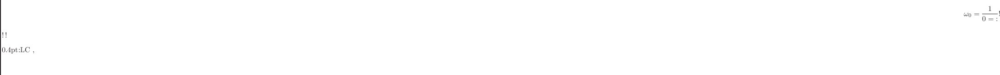
where is a 3rd-rank tensor in reduced notation (see section 1.1) describing the piezoelectric stress constants, is a 1st-rank tensor containing the electrical displacement components, is a 2nd-rank tensor of the permittivity constants, and is a 1st-rank tensor containing the electric field components. [3, p. 24] is analogous to the elasticity tensor, 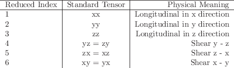, from equation (1.1.7), except that we have now defined its components for the condition of zero electric field. [18, p. 19] The above system of equations shows the nature of the interdependence of the electric and mechanical variables: stress relates to strain through the elasticity constants  (as usual), and to the electric field through the piezoelectric stress constants , while the electric displacement
(as usual), and to the electric field through the piezoelectric stress constants , while the electric displacement  relates to the electric field
relates to the electric field  through the permittivity
constants 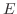, and to the strain through the piezoelectric stress constants once again. The entire system forms a loop of dependence among the variables. A piezoelectric solid requires constants to describe each of these relationships, and thus fully characterize it. Furthermore, strain patterns will vary with the piezoelectric material chosen. [3, p. 24]
through the permittivity
constants 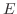, and to the strain through the piezoelectric stress constants once again. The entire system forms a loop of dependence among the variables. A piezoelectric solid requires constants to describe each of these relationships, and thus fully characterize it. Furthermore, strain patterns will vary with the piezoelectric material chosen. [3, p. 24]
From the constitutive relations defined in equations (2.2.1), we can now derive the Piezoelectric Wave Equation in a few simple steps. First, we note that the electric field components,  , can be written in terms of potential, 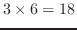, as
. We also note that
, which comes from (1.1.7). Substituting these into our definition of
, can be written in terms of potential, 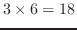, as
. We also note that
, which comes from (1.1.7). Substituting these into our definition of  from (2.2.1), we find[3, p. 26]
from (2.2.1), we find[3, p. 26]
| (2.2.1) |
Piezoelectric coupling changes the effective elasticity coefficient . To find this effect, we solve the system of equations for a plane shear wave. We start by setting two of our particle displacement components,  , to zero, and combining equations (2.2.3) and (2.2.4). Since our hypothetical wave only has displacement coefficients along a single component--notated as 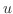--we will drop the tensor notation for clarity. [3, p. 27]
, to zero, and combining equations (2.2.3) and (2.2.4). Since our hypothetical wave only has displacement coefficients along a single component--notated as 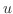--we will drop the tensor notation for clarity. [3, p. 27]
Manipulating the the second equation's term to enable subtracting it from the first equation yields:
which can now be added to equation (2.2.5), to cancel the terms,
Comparing the left-hand side of the above equation to that of equation (1.1.9) shows the relationship between the elasticity coefficient in a material exhibiting piezoelectric coupling, and the elasticity coefficient in a material not exhibiting such coupling (for that vibratory regime), all other things being equal, to be
This value,
, is called the electromechanical coupling coefficient, and it is given for a wave with a specific propagation direction and specific particulate displacement direction, on a particular material. Thus, it has the same dimensionality as . [3, p. 28] N.B. this is a different variable from  , the spatial frequency, although they are intimately related. Piezoelectric stiffening always results in a lower spatial frequency
, and a higher phase velocity 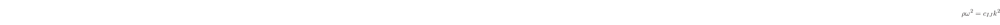, relative to the effective values, since
, the spatial frequency, although they are intimately related. Piezoelectric stiffening always results in a lower spatial frequency
, and a higher phase velocity 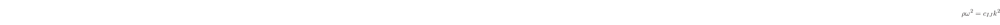, relative to the effective values, since
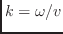
Ceramics like PZT can have a value of up to , while other substances like gallium arsenide can have on the order of 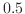. [18, p. 22]
Perhaps the most common method of incorporating piezoelectrics into vibrational measurement involves simply coupling the element to a surface and reading off the voltage-encoded acceleration signal. These are the kind of sensors typically used as ``contact microphones.'' Care must be taken to provide the the correct electrical impedance load to these sensors, otherwise the frequency response will be muffled. Care must also be taken to ensure the mechanical coupling is secure: in semi-permanent applications, the author prefers a double coat of epoxy, and for temporary applications, rare earth magnets. This method is cost-effective, as the resonant properties of the piezoelectric can be ignored, and virtually no external gear is needed. Piezoelectrics are at least as field ready as any other accelerometer; perhaps moreso because of how readily they can be replaced should things go awry. The only real drawback is the mechanical impedance caused by coupling.
The piezoelectric effect is frequently used in the implementation of other devices as well. As electromechanical resonators, piezoelectrics are extremely selective in frequency, which allows them to be used as efficient oscillators and filters. [18, p. 27] There are several variants of piezoelectric sensors, each one sensing a different mode of vibration. However, the vibrations most of these devices are intended to sense are forced. These forced signals are often produced by the converse piezoelectric effect. [7, p. 154] Therefore, despite their novelty, their applicability to the topic at hand--that of spatially measuring acoustic vibration in the field--is fatally limited.
Thickness Shear Mode resonators (TSM), as their name implies, act on the shear mode of vibration as it propagates the thickness of the crystal. TSM resonators are similar in form factor to the general purpose ``piezo-discs,'' however they are much more sensitive when driven to resonance. By tracking fluctuations in the resonant frequency of the crystal, a rigidly bound mass may be measured. [3, p. 37]
The measurement works using the fairly simple hypothesis offered by Lord Rayleigh: that the mechanical resonance only occurs when the peak kinetic energy balances the peak potential energy in a system. A mass that has been rigidly coupled to the surface of the crystal results in a change in kinetic energy, since the surface is naturally an anti-node for the strain wave, without a change in potential energy, which is zero at the surface regardless. [3, p. 43]
Recall from earlier discussions of the boundary behaviors of a vibrating body 1.4 that the incident surface of a reflected wave is the result of a change in impedance. When the impedance of at the surface is zero, the reflection is , and the shear wave traveling across the sensor matches the resonance given by the object alone. However, if the impedance on the other side of the interface is nonzero, the wave is no longer rotated by , and in the case of our forced vibration in section 1.4, a partial standing wave resulted. [7, p. 119] In this case, the vibration is not held at a given frequency, but rather held at resonance, so the frequency of the vibration changes to match the impedance ratio at the barrier.
The quality of TSM measurements, when applied correctly, is outstanding: the sensor can be driven at any of the thickness shear modes, which, similarly to the example we gave in section 1.6, would favor odd integer multiples of the zero-th modal wave-number, itself likely in the megahertz range. The sensitivity of the TSM is given by the Sauerbrey equation,[3, p. 44] where is the surface mass density, or mass per unit area. Since the fluctuations of frequency as the result of incident mass density are proportional to the square of the resonant frequency, this technique can be calibrated to many applications, particularly in the medical and chemical fields. While typically TSM's measure the contribution of mass density most directly, the Rayleigh hypothesis should hold for any net force in the system. The fact that these devices must inject vibrations into the object to perform measurements is troubling as well. However, as long as the vibratory frequencies of interest are sufficiently low relative to the resonator, this should not pose much of a problem. Even the nonlinear relationship between incident mass density must be corrected for after the fact.
Although they vary over a wide range, the transducer itself is fairly cheap, and the implementation circuit is fairly simple. The frequency and stability of the crystal are the two primary factors in the cost vs quality curve. Digitizing the signal with consumer audio equipment would require heterodyning with a high frequency oscillator, perhaps also supplied by a crystal for stability purposes.
The measurement is only precise when the object of interest is thin in comparison with the wavelength of the vibration. This is because a reflection from the opposite boundary of the object measured would then cause its own reflections, and in fact would behave similarly to the coupled sensor as described earlier in this section. As a result of this, typically TSM's are used to measure the mass of rigid, thin films. Therefore, generality is not a strong point of this technique.
We previously discussed Surface Acoustic Waves in section 1.3, in the context of boundary interactions in vibrating objects. These waves have practical uses mostly related to communications and non-destructive testing. That being said, the field of SAW devices is ripe for development. The basic idea for a SAW device is to line a material with strips of piezoelectric material, which alternate to form a pattern that corresponds to the mode of vibration of interest. These striated piezoelectrics, called Interdigital Transducers, can be either sensors or transducers. Frequently, these are designed as two-port devices, to encompass both behaviors. [3, p. 36]
Using the IDT as a building-block, along with materials selected for favorable acoustic properties, ultrasonic mechanical circuits can be made to perform a number of signal processing tasks. [18, p. 318] These devices can perform massive computations in parallel, such as taking arbitrarily large Fourier Transforms, applying filtering, and inverse transforming. [18, p. 391] Sensor-actuator components have been constructed that exploit a dizzying array of vibratory regimes, for a variety of applications. Acoustic Plate Mode devices (APM), which excite shear plate modes both symmetric and asymmetric, and Flexural Plate Wave sensors, which are typically used in micromachining processes, both seem especially well-suited for measuring properties of fluids.[3, p. 106][3, p.115]
However, for our purposes, the essential problem with such devices remains one of impedance. Even in the cases where APM and FPW devices can measure the effects of individual molecules, there is a complex vibratory reaction between the field being measured and the tools used to measure it. [3, p. 120] The quality of the measurements is clearly very high, field readiness and generality questionable, but the impedance is the true site of failure here. We will revisit the topic of piezoelectric devices after a brief characterization of the field in which they may be more useful to us: optics.
joe 2014-01-09